Small deck.
Big possibilities.
Six animated buttons, six useful pages. Launch your favorite consoles, navigate MiSTer, and run Update All—all from your Mini.
Set up your Mini →Get started in four steps
- Download Mini v2.0.0 and extract the ZIP on your computer.
- Copy the complete Scripts contents, including hidden
.config, into/media/fat/Scripts/on MiSTer. - Connect the Mini to MiSTer’s USB host hub with a data-capable USB connection.
- Run
ButtonGoblin_Mini_Enable.shfrom MiSTer’s Scripts menu. It starts now and at boot.
Using a Mini and MK.2 together? Choose the Dual v2.0.0 bundle instead and run ButtonGoblin_Both_Enable.sh.
Scripts/update_all.sh; Button Goblin does not install or replace it.Find your way around
Key 6 advances through the pages. Home’s key 4 runs Update All. Tap Brightness for five ascending levels, or hold it for one second to jump to Navigation. Back returns Home.
Buttons below are shown in their physical positions, left to right. Keyboard shortcuts turn green while held.
1 · Home
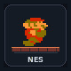
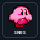
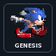
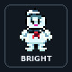
2 · More consoles
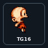
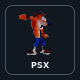
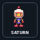
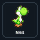
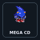
3 · More consoles
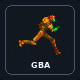
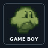
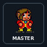
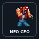
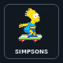
4 · Navigation
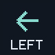
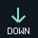
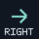
5 · Shortcuts
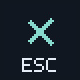
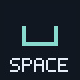
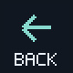
6 · Y / N
Make it yours
Open the Mini editor on your computer. Choose a page and key, set its action and artwork, then save your project and export for MiSTer.
Wait for Update All to finish, run ButtonGoblin_Mini_Disable.sh, copy the export’s complete Scripts contents including hidden .config, then run ButtonGoblin_Mini_Enable.sh. The export supplies your layout and artwork; install Button Goblin first.
Need a hand?
A game does not launch
Check its installed path in the editor. The default SNES button uses a specific Donkey Kong Country favorite; change it to match your setup.
Mini stays blank or shows its built-in logo
Check the USB host connection and data cable, confirm the hidden .config folder was copied, then run Disable followed by Enable after any updater finishes.
What do Y and N control?
They send keyboard input to the active MiSTer screen. They do not answer the background Update All process. Run Update All from MiSTer’s Scripts menu for interactive settings.